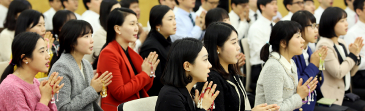

광고/배너

‘지지 않는 마음’을 품은 태양 초등 소년소녀부
탭메뉴
- 활동방향 -
우리는 빛나는 보물, 2030년 세계의 리더로 성장하자!
이케다 선생님께서 “내 다음 꿈은 무엇인가. 바로 전 세계 미래부 여러분 한 사람 한 사람이 용기의 날개를 펼치고 자신의 꿈을 실현하는 일이다.”라고 말씀해주신 것처럼 소년소녀부는 한 사람 한 사람이 2030년 학회창립 100주년, 나아가 학회의 미래를 짊어지는 가장 큰 사명의 인재임을 자각하고 자신의 무한한 가능성을 꽃피워가고자 합니다.
소년소녀부 성장 목표
-

근행창제를 습관화해 자신과 가족의
체험을 만드는 소년소녀부! -
교학을 즐겁게 공부하며 어떤 어려움에도 지지 않는
인재로 성장하는 소년소녀부!
미래부 7지침
-
하나
건강하게 살자
-
둘
책을 읽자
-
셋
상식을 잊지 말자
-
넷
절대 초초해하지 말자
-
다섯
친구를 많이 사귀자
-
여섯
먼저 자신이 복운을 쌓자
-
일곱
부모니께 효도하자
미래본부 및 21세기 사명회의 도전
미래본부 및 21세기 사명회는 “미래부는 한 사람도 빠짐없이 ‘법화경(法華經)의 명(命)을 이을 사람’(어서 1169쪽)”이라는 이케다 선생님의 말씀처럼 코로나19로 인한 어떠한 어려운 상황에서도 소년소녀부를 격려하고 대화하며 함께 전진합니다. 특히 소년소녀부가 근행창제와 미래부 7지침의 생활화를 통해 자신과 가족의 체험을 만들 수 있도록 격려방문을 꾸준히 지속하며, 온라인 또는 오프라인 부원회를 통해 지속적인 연대를 맺어 학회창립 100주년까지 이어지는 후계 육성에 승리합니다.
-
미래 DAY
4부가 실천하는 미래 DAY를 활용하여 월2회 소년 소녀부를 격려해갑니다.
-
한 사람을 소중히!
격려방문을 확대, 지속해 한 사람을 소중히 하는 학회의 정신을 소년소녀부 멤버에게 전합니다.
-
만남을 지속!
감염병 확산 등 어려운 여건이 되더라도 온라인 부원회 등을 통해 멤버들과의 만남을 지속할 수 있도록 준비합니다.
소년소녀부 월별일정
| 월 | 형태 | 부원회 운영방안 | 비고 |
|---|---|---|---|
| 1 | 격려방문 | ‘희망’ 부원회 새학년 결의를 세우고 신행학 도전을 실천합니다. | [어서 1253쪽 16행 – 희망] 사자왕노트 현장 제공 |
| 2 | 문화회관(또는 온라인) | ‘미래부 7지침’ 부원회 7지침 실천을 통해 체험을 만들 수 있도록 격려합니다. | [어서 1192쪽 16행 – 신심의 병법] |
| 3 | 격려방문 | ‘근행창제’ 부원회 근행의 의미를 배우고 즐겁게 근행창제를 실천합니다. | [어서 1351쪽 18행 – 기원의 힘] 사자왕TV [근행편] 영상 제공 |
| 4 | 문화회관 (또는 온라인) | ‘독서’ 부원회 마음의 양식을 넓히는 독서의 재미를 느끼고 실천할 수 있도록 격려합니다. | [어서 958쪽 14~15행 – 단련] |
| 5 | 가족부원회 | ‘가족’ 부원회 학회의 주역으로 성장할 소년소녀부의 가정에서 올바른 신심 계승을 도전합니다. | 사자왕TV [가족편] 영상 제공 |
| 6 | 문화회관(또는 온라인) | ‘승리’ 부원회 2021 페스티벌을 앞두고 자신만의 도전과제를 정하고 실천을 약속합니다. | [어서 329쪽 4~5행 - 자비] |
| 7 | 격려방문 | ‘어서’ 부원회 어서의 의미를 배우고 내가 좋아하는 구절을 정해봅니다. | [어서 1440쪽 13~14행 – 도전] 사자왕TV [어서편] 영상 제공 |
| 8 | 총회 | 2021 영상 페스티벌(사자왕 애니메이션) 사자왕과 친구들이 근행창제와 교학 공부에 도전하여 성장하는 내용을 다룬 애니메이션을 가족과 함께 시청합니다. | |
| 9 | 격려방문 | ‘희망아이디어 공모전’ 참여 9.23 소년소녀부 결성기념일을 맞아 주변에 희망을 전해가는 실천을 합니다. | [어서 1083쪽 12행 – 진금의 사람] 사자왕TV [공모전편] 영상 제공 |
| 10 | 문화회관(또는 온라인) | ‘교학’ 부원회 기초교학(십계)을 통해 나의 마음상태를 배우고 불계의 생명을 알아갑니다. | [어서 1169쪽 3~4행 – 굳센 사람] |
| 11 | 격려방문 | ‘종람이청’ 부원회 학회창립 기념일의 의미를 배우고 2030년까지의 나의 꿈을 정해봅니다. | [어서 1221쪽 5행 – 종람이청] 사자왕TV [학회역사편] 영상 제공 |
| 12 | 문화회관(또는 온라인) | ‘환영환송’ 부원회 일곱 가지 보물! 후계의 계승! | [어서 293쪽 2행 – 보은하는 마음] |